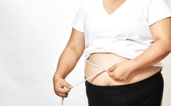

အသက် ၄၀ ကျော်လာတဲ့အခါ ဘာကြောင့်ဝိတ်ချဖို့ ခက်သွားတာလဲ

အမျိုးသမီးအများစုဟာ အသက် ၄၀ ကျော်လာရင် ဖြစ်တတ်တာတွေကို တကယ် မသိကြပါဘူး။ တကယ် သိလာရင်တော့ ဒါဟာ အံသြရတဲ့ အခိုက်အတန့် ဖြစ်နေမှာပါ။ အသက်ကြီးလာတာနဲ့အမျှ ခန္ဓာကိုယ်မှာ အပြောင်းအလဲတွေ ဖြစ်လာပါတယ်။ တချို့ကတော့ အသက်ကြောင့်ဖြစ်ပြီး တချို့ကတော့ သွေးဆုံးကိုင်တာကြောင့် ဖြစ်ပါတယ်။ ဒီလို အကြောင်းတွေကြောင့်ပဲ ဝ ဝ လာတတ်ပါတယ်။ ဒီဆောင်းပါးမှာတော့ ၄၀ ကျော်လာတဲ့အခါ ခန္ဓာကိုယ်မှာ ဘာတွေဖြစ်လာလဲဆိုတာရယ်၊ ဘယ်လိုလုပ်ရင် ကျန်းကျန်းမာမာ နေနိုင်မလဲဆိုတာရယ်ကို စနစ်တကျရေးသားဖော်ပြထားပါတယ်။
၁။ ဟော်မုန်းဓာတ်တွေ နည်းပါး ယုတ်လျော့လာတယ်
အသက် ၄၀ အကျော်မှာ ခန္ဓာကိုယ် အပြောင်းအလဲအတွက် အဓိက တာဝန်ရှိတာကတော့ ဟော်မုန်းတွေပါ။ ဟော်မုန်းဆိုတာ ခန္ဓာကိုယ်ရဲ့လုပ်ငန်းဆောင်တာတော်တော်များများကို ထိန်းချုပ်ထားတဲ့ ဓာတုပစ္စည်းတွေ ဖြစ်ပါတယ်။ အမျိုးသမီးတွေ အနေနဲ့ သွေးဆုံးကိုင်ချိန်ရောက်လာရင် ခန္ဓာကိုယ်ရဲ့ မ ဟော်မုန်း၊ ကျားဟော်မုန်းတွေ ကမောက်ကမ ဖြစ်လာပါတယ်။ ဒီဖြစ်စဉ်တွေဟာ ခန္ဓာကိုယ်မှာ အပြောင်းအလဲ အများကြီးကို ဖြစ်စေပါတယ်။ အရိုးပါးခြင်း၊ ကြွက်သားများ ယုတ်လျော့လာခြင်း၊ လိင်စိတ် လျော့နည်းခြင်းနဲ့ စိတ်အပြောင်းအလဲများခြင်း စတာတွေကို ဖြစ်စေပါတယ်။
ဒီဟော်မုန်းအပြောင်းအလဲကို ကြိတ်မှိတ်ခံစားပြီး အရှုံးပေးဖို့ပဲ မတွေးပါနဲ့။ သင့် သူငယ်ချင်း၊ မိသားစုဝင်တွေနဲ့ စကားပြောကြည့်ပါ။ အွန်လိုင်းမှာ အကူအညီပေးနိုင်မဲ့ အဖွဲ့တွေကို ရှာကြည့်ပါ။ အားလုံးဟာ ဒါမျိုး ကြုံခဲ့ရတာပဲဆိုတာကို တွေ့ရပါလိမ့်မယ်။ ဒီတော့ အားမငယ်ဘဲ ကိုယ့်လို့ အဖော်တွေ အများကြီးလို့ စဉ်းစားပြီး စိတ်အေးအေး ထားသင့်ပါတယ်။
၂။ ဇီဝကမ္မဖြစ်စဉ်တွေ သဘာဝအတိုင်း အကျဘက်ကို ရောက်လာတယ်
ဒီအတွက်ကြောင့်လည်း ဟော်မုန်းတွေကို အပြစ်တင်နိုင်ပါတယ်။ သင့်ရဲ့ဇီဝကမ္မဖြစ်စဉ်တွေ နှောင့်နှေးကုန်တာဟာ အသက်အရွယ်ကြောင့်ကော အီစထရိုဂျင်ဟော်မုန်း နည်းသွားတာကြောင့်ကော ပါပါတယ်။ ဒီလိုနဲ့ အဆီပိုတွေ စုမိလာမယ်။ အထူးသဖြင့်တော့ ခါးတဝိုက်မှာပေါ့။ သုတေသနပညာရှင်တွေကတော့ သွေးဆုံးကိုင်ချိန်နဲ့ သွေးဆုံးပြီးချိန်တွေမှာ ဖြစ်တတ်တဲ့ ဟော်မုန်း အပြောင်းအလဲတွေကြောင့် ခန္ဓာကိုယ်မှာ အဆီတွေစုလာတာနဲ့ ခန္ဓာကိုယ်ပုံပျက်လာတာတွေကို တွေ့ရပါတယ်လို့ ဆိုပါတယ်။
ဒါကြောင့် ဇီဝကမ္မဖြစ်စဉ်တွေ ပုံမှန်ဖြစ်နေဖို့အတွက် တက်တက်ကြွကြွနေပါ။ အားကစားပညာရှင် တစ်ဦးကတော့ ဒီပြဿနာအတွက် အင်အားသုံးရတဲ့ လေ့ကျင့်ခန်းနဲ့ သွေးပူလေ့ကျင့်ခန်းတွေကို တွဲလုပ်ဖို့ အကြံပေးထားပါတယ်။ ဒီထက်ပိုလျော့လုပ်ချင်ရင်တော့ အကနဲ့ လက်ဝှေ့လေ့ကျင့်ခန်းလိုဟာမျိုးကို လုပ်ကြည့်ဖို့လည်း အကြံပေးထားပါတယ်။ ဒါ့အပြင် အမျှင်ဓာတ်များများ စားပါ။ ရေလဲများများသောက်ပေးပါ။
၃။ အသက်အရွယ်အရ ကြွက်သားတွေ ဆုံးရှုံးလာတယ်
အသက် ၄၀ ကျော်တဲ့အခါ သင့်ခန္ဓာကိုယ်ရဲ့ အဓိက ကယ်လိုရီသုံးပေးတဲ့ အစိတ်အပိုင်းဖြစ်တဲ့ ကြွက်သားတွေ ဆုံးရှုံးလာပါတယ်။ တစ်နှစ်ကို တစ်ရာခိုင်နှုန်းလောက်နဲ့ ကျလာပါတယ်။ ဒါတွေဟာ အီစထရိုဂျင်နဲ့ တက်စတိုစတီရုန်း ကျလာတာနဲ့ ဆက်စပ်နေပါတယ်။ ဒါတွေနဲ့ ဇီဝကမ္မဖြစ်စဉ်တွေ နှေးလာတာနဲ့ပေါင်းပြီး သင့် ခန္ဓာကိုယ်ဟာ ငယ်ငယ်ကလို ကယ်လိုရီတွေ မလောင်ကျွမ်းနိုင်တော့ပါဘူး။
အင်အားသုံးရတဲ့ လေ့ကျင့်ခန်း ဒါမှမဟုတ် အလေးမတာကို တစ်ပတ်မှာ နှစ်ကြိမ် ကနေ လေးကြိမ်အထိ လုပ်ပေးပါ။ ဒီလေ့ကျင့်ခန်းတွေဟာ ကြွက်သားတွေကို ပြန်တည်ဆောက်ပေးရုံသာမက အဆီပိုတွေကို လောင်ကျွမ်းစေပြီး ဇီဝကမ္မဖြစ်စဉ်တွေကို ပြန်လည် မြန်ဆန်လာစေမှာပါ။ ဒါတွေကပဲ သင့်ရဲ့အရိုးတွေနဲ့ ခန္ဓာကိုယ်ကို သန်မာလာစေမှာပါ။ ကြွက်သားဆိုတာက အရိုးနဲ့ အဆစ်တွေကို အထောက်ပ့ံပေးတဲ့ အစိတ်အပိုင်းဖြစ်ပြီး လှုပ်ရှားသွားလာရ လွယ်ကူစေပါတယ်။ တကယ်လို့ အင်အားသုံးရတဲ့ လေ့ကျင့်ခန်းတွေကို တစ်ခါမှ မလုပ်ဖူးရင် နည်းပြတစ်ယောက်နဲ့ နှစ်ကြိမ် သုံးကြိမ်လောက် အရင် လေ့ကျင့်သင့်ပါတယ်။
၄။ ခန္ဓာကိုယ်က အင်ဆူလင်ကို တုံ့ပြန်မှု မရှိတော့ဘူး
အသက်ကြီးလာတဲ့အခါ၊ အထူးသဖြင့် ဝလာတဲ့အခါ န္ဓာကိုယ်က အင်ဆူလင် ခိုင်းသမှကို လျစ်လျူရှူပါတော့တယ်။ အင်ဆူလင်ရဲ့ အဓိကတာဝန်ကတော့ သွေးတွင်းသကြားဓာတ်ကို ထိန်းပေးတာပဲ ဖြစ်ပါတယ်။ ရလဒ်အနေနဲ့ သွေးတွင်းသကြားဓာတ် မြင့်လာပါတယ်။ အကြောင်းအရင်းကတော့ ခန္ဓာကိုယ် ဆဲလ်တွေက သကြားဓာတ်ကို မစုပ်ယူတော့လို့ပါ။ နောက်ဆက်တွဲအနေနဲ့ ပိုဆာလောင်လာပါလိမ့်မယ်။
ဒါဟာ သင့်ကို ပိုဝစေရုံသာမက အမျိုးအစား-၂ ဆီးချိုရောဂါ ဖြစ်စေနိုင်တဲ့အထိ ဆိုးပါတယ်။ ဒီလို သကြားဓာတ်များတာကို ကာကွယ်ဖို့ အစားစားတိုင်း ကာဗိုဟိုက်ဒရိတ်၊ အသားဓာတ်နဲ့ အဆီကို စုံအောင် သင့်တင့်မျှတအောင် စားပေးဖို့ လိုပါမယ်။ ကာဗိုဟိုက်ဒရိတ်ချည်း သီးသန့်မစားပါနဲ့။ အသားဓာတ်နဲ့ ကျန်းမာရေးနဲ့ ညီညွတ်တဲ့ အဆီဓာတ်ဟာ သင့်ကို အချိန်အကြာကြီး မဆာအောင် ထိန်းထားပေးနိုင်တဲ့အတွက် သင့်အနေနဲ့ သကြားဓာတ်များတာတွေကို မစားမိတော့ဘဲ သကြားဓာတ်တက်တာကို ကာကွယ်နိုင်ပါတယ်။
နောက်တစ်ခုက စားလိုက်တဲ့ ကာဗိုဟိုက်ဒရိတ်ဟာ ဘယ်ကရသလဲ ဆိုတာပါပဲ။ တကယ်လို့ အချိုရည်က ရတာဆိုရင် သွေးတွင်း သကြားဓာတ်က လျင်လျင်မြန်မြန်ပဲ မြင့်တက်လာမှာ ဖြစ်ပါတယ်။ တကယ်လို့ ဆန်လို အစိုင်အခဲကနေ ရတာဆိုရင် သင့်အနေနဲ့ အမျှင်ဓာတ်ကိုပါ ရရှိနိုင်ပြီး သကြားဓာတ်ဟာ ဖြည်းဖြည်းပဲတက်လာမှာ ဖြစ်ပါတယ်။ အသက် ၄၀ ကျော်ချိန်မှာ စားဖို့အသင့်ဆုံးကတော့ မြေထဲပင်လယ်စတိုင် အစားအစာတွေပဲ ဖြစ်ပါတယ်။ ဒီ အစားအသောက်တွေဟာ ကင်ဆာနဲ့ နှလုံးရောဂါကို ကာကွယ်နိုင်ပြီး သွေးတွင်းသကြားဓာတ်ကို အများကြီး တက်စေတာမျိုး မရှိဘူးလို့ ဆိုပါတယ်။
၅။ စားချင်စိတ်ဟာ မရေမရာ ဖြစ်လာပါတယ်
ဆာလောင်နေကြောင်း အချက်ပြတဲ့ ဟော်မုန်းနဲ့ ဗိုက်ပြည့်ကြောင်း အချက်ပြမယ့် ဟော်မုန်းတွေ အားလုံးဟာလည်း အရွယ်ရလာတာနဲ့ အပြောင်းအလဲတွေ ဖြစ်လာပါတယ်။ အသက်ကြီးလာတဲ့အခါ ဒီဟော်မုန်းလက်ခံရာ နေရာတွေဟာ အရင်ကလို ကောင်းကောင်း အလုပ်မလုပ်တော့ဘဲ ဟော်မုန်းခိုင်းတာတွေကို လိုက်မလုပ်တော့ပါဘူး။ ဒီအချိန်မှာ ဆာလောင်တယ်ဆိုတာကတော့ ဟော်မုန်းတွေကြောင့်ပဲ ဖြစ်လာတာပါ။
စားသမှကို မှတ်စုလုပ်ထားမယ်ဆိုရင် စားသောက်မှုပုံစံမှာ ဘာအပြောင်းအလဲ ရှိတာလဲဆိုတာရယ်၊ ဆာလောင်မှုကို ဘယ်လိုထိန်းရမလဲဆိုတာရယ်ကို သိလာပါလိမ့်မယ်။ ဒီလို ရေးမှတ်လိုက်တဲ့အခါ တစ်နေကုန်မှာ အများကြီး စားမိသလား။ အဆာပြေပဲ စားမိသလားဆိုတာကို သိလာမှာ ဖြစ်ပါတယ်။ ဒီ မှတ်စုကနေ အသားဓာတ် လုံလုံလောက်လောက်စားရဲ့လားဆိုတာကိုပါ သိနိုင်ပါတယ်။ သင့်အနေနဲ့ ထမင်းတစ်နပ်တိုင်းမှာ အသားဓာတ် ၂၀၊ ၃၀ ဂရမ်လောက် စားပေးသင့်ပါတယ်။ အကြောင်းရင်းကတော့ ခန္ဓာကိုယ်ဟာ အသားဓာတ်ကို များမှ စုပ်ယူနိုင်တာဖြစ်လို့ပါ။
၆။ အချိန်က အရင်လို မတက်ကြွအောင် ပြောင်းလဲလိုက်တယ်
အလုပ်၊ မိသားစုနဲ့ သူငယ်ချင်းတွေကြားမှာ လေ့ကျင့်ခန်းချိန်တွေဟာ နောက်ပို့ခံလိုက်ရပါတယ်။ နောက်တစ်ခုကတော့ အဆစ်အမြစ်တွေအရင်လို မကောင်းတော့တာကလည်း ဒါကို ပိုအားပေးနေပါတယ်။ အလွန်အကျွံ လုပ်မိတာနဲ့ ဒဏ်ရာရခဲ့ဖူးတာတွေက အရင်က ကြိုက်နှစ်သက်တဲ့ အလုပ်တွေ မလုပ်ဖြစ်အောင် တားနေသလို ပိုနှေးကွေးသွားစေပါတယ်။ ဒါတွေကြောင့်ပဲ ပုံပျက်လာတယ်လို့ ခံစားရစေပါတယ်။
ဒီတော့ လုပ်စရာရှိဆက်လုပ်နေပါ။ Gym ဒါမှမဟုတ် ပြေးတာပဲ လုပ်နေစရာ မလိုပါဘူး။ သင် နှစ်သက်တာကို ရှာလုပ်ပါ။ ဒါမှသာ ရေရှည်လုပ်နိုင်မှာ ဖြစ်ပါတယ်။ တကယ်လို့ သင်ဒဏ်ရာရပြီး လုပ်ချင်တာ လုပ်မရတော့ရင် တခြားလေ့ကျင့်ခန်းတစ်မျိုး ဒါမှမဟုတ် အိမ်တွင်းလေ့ကျင့်ခန်းလေးတွေပဲ ပြောင်းလုပ်ကြည့်ပါ။
တက်တက်ကြွကြွနေတာဟာ ဇီဝကမ္မဖြစ်စဉ်ကိုပဲ အားပေးတာတင်မကပဲ လေ့ကျင့်ခန်း လုပ်ချိန်မှာထွက်တဲ့ ဟော်မုန်းကလည်း စိတ်အခြေအနေကို ပိုကောင်းစေပါတယ်။ ဒါကြောင့် နေလို့ကောင်းအောင် ကိုယ်တိုင်ပဲ ကြိုစားလုပ်ယူပါ။ ဒါ့အပြင် ပုံမုန်လေ့ကျင့်ခန်းလုပ်ပေးတာကြောင့် နှလုံး၊ ဆီးချိုရောဂါတွေလို ရောဂါဖြစ်ပွားမှုကို လျော့ချပေးပါတယ်။
၇။ စိတ်ဖိစီးမှု ပိုများလာတယ်
အမျိုးသမီးတွေအနေနဲ့ ဒီအသက်အရွယ်မှာ အလုပ်အကိုင်၊ ငွေကြေး၊ သားသမီးနဲ့ မိဘ ကိစ္စတွေကြားမှာ အလုပ်ရှုပ်ရင်း စိတ်ခံစားမှု ဖိအား များတတ်ပါတယ်။ ဖိအားများလို့ ခံစားရတဲ့အခါ ကော်တီဇော ဟော်မုန်းထွက်လာပြီး ဟော်မုန်းက သွေးတွင်းသကြားဓာတ်ကို ကျစေကာ စားချင်စိတ်ကို ဖြစ်စေပါတယ်။ အထူးသဖြင့် သကြားကိုပါ။ ဒီလိုနဲ့ ခါးတဝိုက်မှာ အဆီတွေ စုလာပါလိမ့်မယ်။ ခါးတုတ်တာဟာ ဆီးချိုနဲ့ နှလုံးရောဂါတွေနဲ့ ဆက်စပ်နေပါတယ်။ နောက်ပြီး စိတ်ကို ထိန်းညှိပါ။ ယောဂ၊ တရားထိုင်၊ ဆေးရောင်ခြယ်တာနဲ့ စာအုပ်ဖတ်တာ စတဲ့ စိတ်အပန်းပြေစေမယ့် အရာတွေကို လုပ်ပါ။
၈။ အိပ်စက်မှုပုံစ ံပြောင်းလဲလာတယ်
အမျိုးသမီးအများစုဟာ အသက်ကြီးလာတဲ့အခါ အိပ်မရတဲ့ပြဿနာ ကြုံလာကြရပါတယ်။ ဒါမှမဟုတ် အပြည့်အဝ အိပ်ပြီးတာတောင် အနားမရလိုက်သလို ခံစားရနိုင်ပါတယ်။ ဒီလိုဖြစ်တဲ့အခါ လေ့ကျင့်ခန်းလုပ်ဖို့ ဒါမှမဟုတ် တက်တက်ကြွကြွနေဖို့ အားမရှိတော့ဘူး ဖြစ်သွားပါလိမ့်မယ်။ ဒီအသက်အရွယ်မှာ အိပ်တာကို နှောင့်ယှက်တတ်တဲ့ အကြီးဆုံး ရန်သူကတော့ သွေးဆုံးကိုင်တာနဲ့ ဇောချွေးပြန်တာတို့ပဲ ဖြစ်ပါတယ်။ ဒီအတွက်လည်း ဟော်မုန်းတွေရဲ့အပြောင်းအလဲကို အပြစ်တင်လို့ ရပါတယ်။
ပထမဆုံးအနေနဲ့ ကောင်းမွန်တဲ့ အိပ်စက်မှုအတွက် အချိန်သတ်မှတ်ထားပါ။ အထူးသဖြင့် မအိပ်ခင် ဖုန်း၊ ကွန်ပျူတာ၊ တီဗီ စတာတွေကို ပိတ်လိုက်ပါ။ သုတေသနအရ ဒီပစ္စည်းတွေက ထွက်တဲ့ အပြာရောင်အလင်းဟာ ဇီဝနာရီစည်းချက်ကို ပျက်စေပြီး မယ်လ်လတိုနင် ထွက်ရှိမှုကိုတားလိုက်ပါတယ်။ မယ်လ်လတိုနင်ဟာ ညမှာ အိပ်ပျော်စေတဲ့ဟော်မုန်း ဖြစ်ပါတယ်။ တကယ်လို့ သွေးဆုံးကိုင်တာနဲ့ ဇောချွေးပြန်တာတွေဟာ နှောင့်ယှက်နေဦးမယ်ဆိုရင်တော့ အိပ်ခါနီး ရေချိုးတာမျိုး၊ ညဝတ်အကျႌပါးပါးပဲ ဝတ်အိပ်တာမျိုး လုပ်ပေးလို့ ရပါတယ်။ ကဖင်းနဲ့ အရက်ကိုလဲရှောင်ပါ။ အထူးသဖြင့် ဝိုင်နီတွေဟာ သွေးဆုံးကိုင်ဝေဒနာကို ပိုဆိုးစေလို့ ရှောင်သင့်ပါတယ်။
ဒီတော့ အသစ် ပြန်တည်ဆောက်ပါ
အသက် ၄၀ ကျော်မှာ ပြန်လည် ကျန်းမာအောင်လုပ်ဖို့ အရေးအကြီးဆုံးကတော့ ကျန်းမာရေးနဲ့ ညီညွတ်တဲ့ အစားအသောက်နဲ့ လေ့ကျင့်ခန်းပဲ ဖြစ်ပါတယ်။ တကယ်လို့ ကြိုးစားနေပေမဲ့ ခန္ဓာကိုယ်က ပြောင်းလဲမှု မရှိဘူးဆိုရင် နောက်ထပ် လေ့ကျင့်ခန်းပုံစံအသစ်ကို ပြောင်းဆော့ကြည့်ပါ။ နောက်ထပ် အစားအသောက်ပုံစံသစ်ကို ပြောင်းစားကြည့်ပါ။ တစ်ခါတလေမှာ အပြောင်းအလဲဆိုတာ တူညီတဲ့ လေ့ကျင့်ခန်း အစီအစဉ်ကို နှစ်ဆတိုးလုပ်တာမျိုး မဟုတ်ဘဲ မတူညီတဲ့၊ သင့်အတွက် အကျိုးရှိတဲ့ အစီအစဉ်ကို ပြောင်းလဲဆော့တာကို ဆိုလိုတာပါ။
အသက် ၄၀ ကျော်လာလို့ အားမငယ်ပါနဲ့နော်။
Source-ဒေါက်တာကောင်းစံလင်း